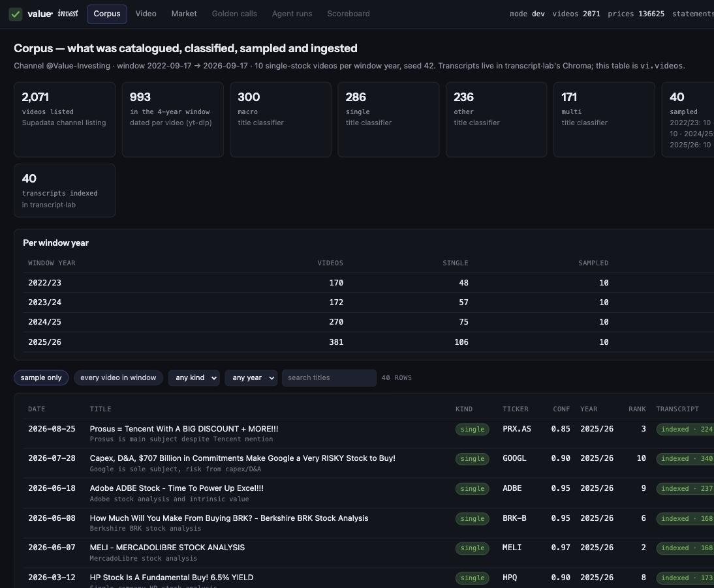
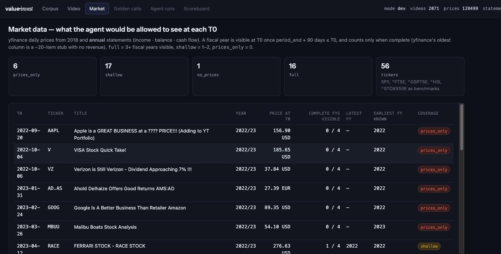
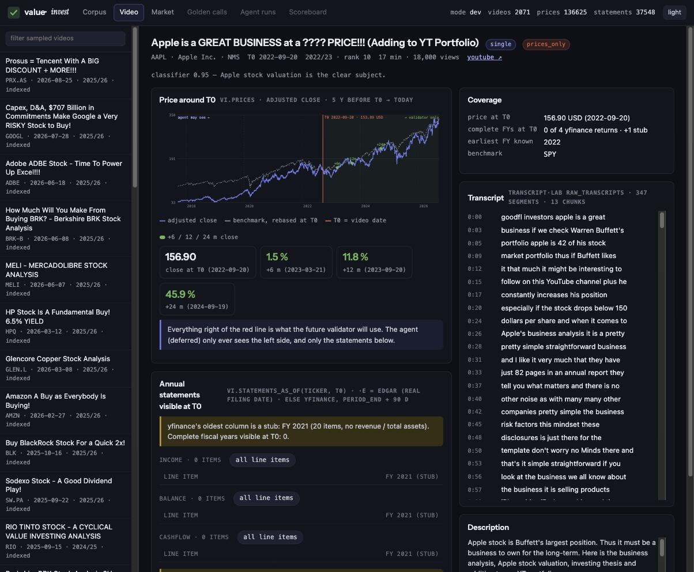
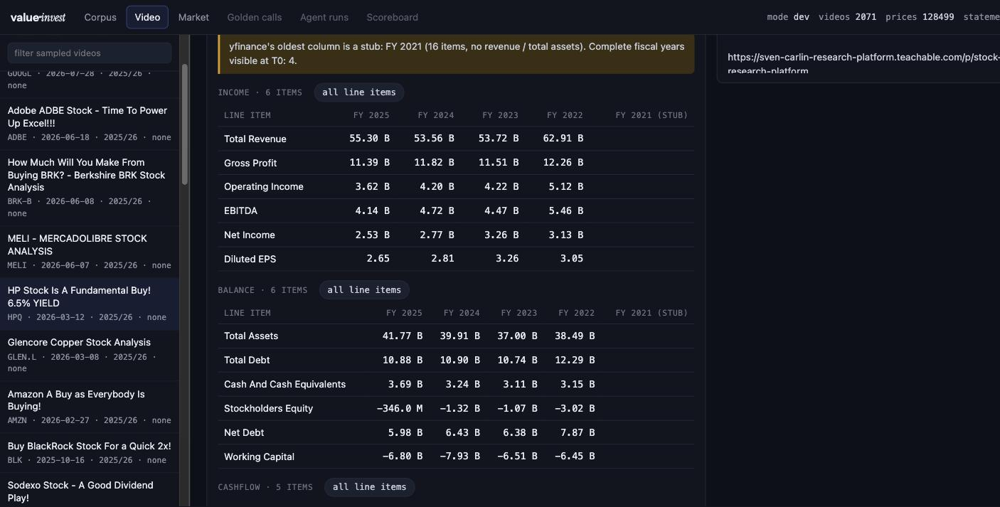

The catalog, the title classifier, the 40-video sample, four years of Yahoo prices and annual statements behind a point-in-time view, and the walkthrough app are built and running on real data. The one step that could not run is the transcript ingest: the Supadata plan is out of credits. Everything on this page comes from the live app at http://127.0.0.1:8791.
| Slice | Planned (s00 rev 3) | Built | Status |
|---|---|---|---|
| S1a catalog | Supadata id list + one metadata call per video | Supadata id list (cached) + yt-dlp dates: channel tab for all 2,071 (approximate), per-video for 587 (exact). date_source recorded per row. | done |
| S1b classify | Agent SDK title → kind + ticker, ≥ 95 % on the seed | 26 SDK sessions of 40 titles, 1,032 labelled, 0 errors. Seed: 95 % kind, 95 % ticker. | done |
| S1c sample | 10 single-stock per window year, seeded | 40 videos, quarter-stratified, exact dates only, extends without reshuffling (tested). | done |
| S1d ingest | transcript·lab index-rag per sampled video | Bridge + read-back written and exercised; Supadata returns limit-exceeded. | blocked |
| S2 market | yfinance prices + annual statements, as-of view, coverage | 128k price rows, 37.5k statement rows, vi.prices_as_of / vi.statements_as_of, vi.fiscal_years with a completeness flag, coverage per video. | done |
| S3 app | Corpus · Video · Market in transcript·lab's tokens | FastAPI over DuckDB + Chroma; React 19 with the copied theme.css tokens and fonts; M2 tabs stubbed. | done |
# reproduce, in order uv run vi db init uv run vi catalog # 2,071 videos, dates uv run vi classify # 26 Agent SDK calls uv run vi refine-dates # exact dates for singles uv run vi sample # 40, seed 42 uv run vi ingest # needs Supadata credits uv run vi market # yfinance → DuckDB uv run vi serve # :8791
# what is on disk data/value_invest.duckdb # schema vi, gitignored .vi/supadata/ .vi/ytdlp/ # metadata caches .vi/market/<ticker>/*.parquet data/samples/titles_2026-09_labels.json data/samples/classifier_seed_eval.json frontend/dist/ # npm run build
| window year | videos | single | sampled | indexed |
|---|---|---|---|---|
| 2022/23 | 170 | 48 | 10 | 0 |
| 2023/24 | 172 | 57 | 10 | 0 |
| 2024/25 | 270 | 75 | 10 | 0 |
| 2025/26 | 381 | 106 | 10 | 0 |
Window years are 12 months from 2022-09-17, labelled by their start, so every bucket carries the same span. The channel's output more than doubled across the window (170 → 381 videos), which is why a per-year quota rather than a random 40 was the right call: a uniform draw would have put half the sample in the last year.
Classifier confidence on singles: 237 of 286 at ≥ 0.9; 12 below 0.8. Eligibility for the sample was confidence ≥ 0.6 and an exact date.

Funnel stats, the per-year table, and the sample. Every row opens the Video tab. "every video in window" switches to all 993 with the classifier's label and one-line rationale, which is how the labels get spot-checked.
Coverage counts complete fiscal years visible at T0 under the annual-only rule (period_end + 90 d ≤ T0). full ≥ 3 · shallow 1–2 · prices_only 0 · no_prices Yahoo has no history.
| T0 | year | ticker | title · classifier rationale | conf | close at T0 | FYs at T0 | coverage |
|---|---|---|---|---|---|---|---|
| 2022-09-20 | 2022/23 | AAPL | Apple is a GREAT BUSINESS at a ???? PRICE!!! (Adding to YT Portfolio) Apple stock valuation is the clear subject. | 0.95 | 156.90 USD | 0 / 4 | prices_only |
| 2022-10-04 | 2022/23 | V | VISA Stock Quick Take! Quick take specifically on Visa stock. | 0.95 | 185.65 USD | 0 / 4 | prices_only |
| 2022-10-06 | 2022/23 | VZ | Verizon is Still Verizon - Dividend Approaching 7% !!! Verizon dividend analysis, single company subject. | 0.95 | 37.84 USD | 0 / 4 | prices_only |
| 2023-01-31 | 2022/23 | AD.AS | Ahold Delhaize Offers Good Returns AMS:AD Ahold Delhaize is sole subject | 0.90 | 27.39 EUR | 0 / 4 | prices_only |
| 2023-02-24 | 2022/23 | GOOG | Google Is A Better Business Than Retailer Amazon Google as subject, Amazon comparison secondary | 0.70 | 89.35 USD | 0 / 4 | prices_only |
| 2023-03-26 | 2022/23 | MBUU | Malibu Boats Stock Analysis Single company stock analysis | 0.90 | 54.10 USD | 0 / 4 | prices_only |
| 2023-04-12 | 2022/23 | RACE | FERRARI STOCK - RACE STOCK Ferrari stock is sole subject | 0.90 | 276.63 USD | 1 / 4 | shallow |
| 2023-06-28 | 2022/23 | BATS.L | British American Tobacco BATS Stock 2023 Quick Take BAT stock quick take | 0.95 | 2599.50 GBp | 1 / 4 | shallow |
| 2023-09-07 | 2022/23 | INTC | Intel Stock Discussion End 2023 Single company stock discussion | 0.90 | 38.18 USD | 1 / 4 | shallow |
| 2023-09-15 | 2022/23 | FL | Foot Locker Stock Was A BUY at $30 For Me!!! (March 2022) Single company stock buy discussion | 0.90 | 0 / 0 | no_prices | |
| 2023-11-30 | 2023/24 | CPNG | Coupang Stock Analysis - Korea e-commerce! Coupang stock analysis | 0.90 | 15.28 USD | 1 / 4 | shallow |
| 2023-12-09 | 2023/24 | ZIM | ZIM Integrated Shipping Stock Analysis for 2024 ZIM stock analysis | 0.95 | 7.36 USD | 1 / 4 | shallow |
| 2024-02-09 | 2023/24 | LYB | LyondellBasell NYSE: LYB Stock Analysis LyondellBasell stock analysis | 0.97 | 95.40 USD | 1 / 4 | shallow |
| 2024-02-10 | 2023/24 | IBKR | IBKR STOCK IS A BUY! Great broker, better stock! (Interactive Brokers) IBKR stock analysis | 0.96 | 24.51 USD | 1 / 4 | shallow |
| 2024-02-25 | 2023/24 | BRK-B | 7 Lessons & 4 Warnings From Buffett's Letter And Berkshire's Earnings Buffett letter and Berkshire earnings focus | 0.80 | 417.22 USD | 1 / 4 | shallow |
| 2024-04-22 | 2023/24 | HSY | Hershey Stock Analysis NYSE: HSY Hershey stock analysis | 0.98 | 186.33 USD | 2 / 4 | shallow |
| 2024-05-03 | 2023/24 | INTC | Intel Stock Is Back To Value, Again... Intel is sole subject | 0.97 | 30.90 USD | 2 / 4 | shallow |
| 2024-06-22 | 2023/24 | PYPL | PAYPAL Stock Analysis (PYPL Stock Risk & Reward) Explicit PYPL stock analysis | 0.95 | 60.61 USD | 2 / 4 | shallow |
| 2024-07-03 | 2023/24 | ENX.PA | Euronext Stock Is An Interesting Monopoly Stock To Watch Euronext stock is subject | 0.85 | 90.30 EUR | 2 / 4 | shallow |
| 2024-08-31 | 2023/24 | AAPL | Value Investing Is Hard In This Crazy Market (Buffett Lost Big On Apple) Buffett's Apple loss highlighted as focal example | 0.60 | 229.00 USD | 2 / 4 | shallow |
| 2024-10-14 | 2024/25 | TEP.PA | Teleperformance Stock Is Cheap & Can Easily 2X In Next 12 Months Teleperformance is the subject | 0.90 | 87.42 EUR | 2 / 4 | shallow |
| 2024-11-22 | 2024/25 | VOW3.DE | Volkswagen Investors Capitulating - VOW3 Stock At Decade Lows!!! VOW3 Stock Analysis Volkswagen VOW3 stock analysis | 0.90 | 81.80 EUR | 2 / 4 | shallow |
| 2025-01-09 | 2024/25 | TRMD | TORM Isn't Howard Marks Biggest Position, It's His Biggest Mistake TORM/TRMD shipping stock as subject | 0.85 | 20.98 USD | 2 / 4 | shallow |
| 2025-01-20 | 2024/25 | VZ | Verizon Stock (VZ) Intrinsic Value Verizon stock intrinsic value | 0.95 | 38.78 USD | 2 / 4 | shallow |
| 2025-01-21 | 2024/25 | AAPL | Apple Stock Intrinsic Value is $105 Apple intrinsic value analysis | 0.95 | 222.64 USD | 3 / 4 | full |
| 2025-05-15 | 2024/25 | UNH | My Take on UNH Stock Crash = Too Hard Pile UNH is sole subject | 0.90 | 274.35 USD | 3 / 4 | full |
| 2025-06-02 | 2024/25 | CPR.MI | Campari Stock Quick Take BIT: CPR Campari is subject, ticker given (BIT:CPR) | 0.90 | 5.60 EUR | 3 / 4 | full |
| 2025-06-18 | 2024/25 | KHC | Kraft Heinz Stock Analysis KHC Stock Kraft Heinz is the subject | 0.95 | 25.68 USD | 3 / 4 | full |
| 2025-09-04 | 2024/25 | BRK-B | Berkshire BRK Stock Analysis 2H 2025 Berkshire is the subject | 0.95 | 506.91 USD | 3 / 4 | full |
| 2025-09-15 | 2024/25 | RIO | RIO TINTO STOCK - A CYCLICAL VALUE INVESTING ANALYSIS Rio Tinto is the subject | 0.95 | 63.72 USD | 3 / 4 | full |
| 2025-09-22 | 2025/26 | SW.PA | Sodexo Stock - A Good Dividend Play! Sodexo stock is sole subject, dividend play | 0.90 | 52.25 EUR | 3 / 3 | full |
| 2025-10-16 | 2025/26 | BLK | Buy BlackRock Stock For a Quick 2x! Single stock BlackRock analysis | 0.95 | 1171.36 USD | 3 / 4 | full |
| 2026-02-27 | 2025/26 | AMZN | Amazon A Buy as Everybody Is Buying! Single company Amazon buy analysis | 0.95 | 210.00 USD | 3 / 4 | full |
| 2026-03-08 | 2025/26 | GLEN.L | Glencore Copper Stock Analysis Single company Glencore copper analysis | 0.90 | 502.80 GBp | 3 / 4 | full |
| 2026-03-12 | 2025/26 | HPQ | HP Stock Is A Fundamental Buy! 6.5% YIELD Single company HP stock analysis | 0.90 | 18.95 USD | 4 / 4 | full |
| 2026-06-07 | 2025/26 | MELI | MELI - MERCADOLIBRE STOCK ANALYSIS MercadoLibre stock analysis | 0.97 | 1607.80 USD | 4 / 4 | full |
| 2026-06-08 | 2025/26 | BRK-B | How Much Will You Make From Buying BRK? - Berkshire BRK Stock Analysis Berkshire BRK stock analysis | 0.95 | 487.00 USD | 4 / 4 | full |
| 2026-06-18 | 2025/26 | ADBE | Adobe ADBE Stock - Time To Power Up Excel!!! Adobe stock analysis and intrinsic value | 0.95 | 195.16 USD | 4 / 4 | full |
| 2026-07-28 | 2025/26 | GOOGL | Capex, D&A, $707 Billion in Commitments Make Google a Very RISKY Stock to Buy! Google is sole subject, risk from capex/D&A | 0.90 | 333.71 USD | 4 / 4 | full |
| 2026-08-25 | 2025/26 | PRX.AS | Prosus = Tencent With A BIG DISCOUNT + MORE!!! Prosus is main subject despite Tencent mention | 0.85 | 38.05 EUR | 4 / 4 | full |
Repeats: BRK-B ×3, AAPL ×3, VZ ×2, INTC ×2 — the draw prefers distinct tickers within a year, not across years. Whether repeats across years are wanted (same name, different T0 — arguably the best test of an analyst) is a decision below.
full
shallow
prices only
no prices
By window year: 2022/23 6 prices-only, 3 shallow, 1 no-prices · 2023/24 10 shallow · 2024/25 6 full, 4 shallow · 2025/26 10 full. Exactly the shape the plan predicted for annual-only Yahoo data: the first window year sees no complete fiscal year at T0, the last sees four.
What is in DuckDB: 128,499 daily rows for 34 tickers + SPY, ^STOXX50E, ^FTSE, ^HSI, ^GSPTSE from 2018; 37,548 annual line items; vi.fiscal_years flags a year complete only when Total Revenue and Total Assets are present.

Market tab. Sorted by T0 so the coverage gradient across the window is visible at a glance.

Apple, 2022-09-20. The chart is adjusted close with SPY rebased at T0 (dashed); the red line is the video date; the shaded right side is validator-only, with +6 / 12 / 24 m closes (+1.5 %, +11.8 %, +45.9 %). Coverage says 0 complete fiscal years at T0 plus one stub — FY2021 is the yfinance stub column, and FY2022 (period end 30 Sep) is not visible until 29 Dec. The transcript panel shows the ingest is pending.

HP, 2026-03-12. The other end of the window: four complete fiscal years at T0 (FY2022–FY2025), headline items per statement with an "all line items" toggle, and the FY2021 stub labelled as such. Everything after T0 is listed as hidden with the date it would become visible.
/metadata costs one credit per video and the account hit limit-exceeded during the first catalog run. The catalog now dates videos with yt-dlp and reads Supadata only from its cache. Net effect: the ≈1,050 Supadata calls the plan budgeted for dating were never needed. Transcripts still go through transcript·lab → Supadata and are what the credits should be spent on.
yt-dlp's approximate_date reads "3 years ago" off the listing. A first draw on those dates put 13 of 40 videos outside the window once exact dates arrived. Fix: exact-date every single-stock candidate near the window (156 per-video fetches, paced to avoid YouTube's bot-check), and let the sample use exact dates only. The failed draw is why the sample code now has a test that a bigger draw never reshuffles an earlier one.
It looked like 5 fiscal years; the oldest has ~20 items and no revenue, net income or total assets for 52 of 55 tickers. So Yahoo gives four complete years (FY2022–FY2025 today), and coverage is counted on complete years only. The app labels stub columns rather than hiding them.
Foot Locker (FL, video 2023-09-15) was acquired in 2025; Yahoo returns nothing. One of 40, but the eventual validator has to treat "acquired" as an outcome, not a missing price.
286 of 993. Macro/market commentary is 30 %. The seed's recent 40 titles over-represented stock analyses. 286 singles is still 7× the sample, so the per-year quota of 10 is easily met (48 / 57 / 75 / 106 eligible per year).
A pipeline command and the server cannot hold the file at once; run the pipeline, then serve. Fine for M1; the demo snapshot pattern (read-only copy) solves it for a deployment.
40 transcript fetches is a small spend. Then uv run vi ingest populates transcript·lab's Chroma and the Video tab's transcript panel fills in; nothing else changes.
Every sampled video has YouTube auto-captions. transcript·lab's fetcher is Supadata-only; adding a provider there is a small change in the sibling repo, but auto-captions are lower quality than Supadata's and it changes the corpus's provenance.
Checked after writing, against the live API and the repo, before handing over.
| Check | Result |
|---|---|
| Every number on this page matches /api/funnel and /api/market/coverage at the time of writing | yes — generated from the API, not typed |
| All 40 sampled videos fall inside the window with exact dates | yes — 2022-09-20 → 2026-08-25; 34 yt-dlp + 6 Supadata |
| Every sampled ticker resolves on Yahoo | 39 / 40 — FL delisted (recorded, not hidden) |
| No agent-visible read bypasses the as-of macros | yes — the app reads statements only through vi.statements_as_of; forward prices are a separate, labelled query for the validator |
| Tests | 10 passed — keyless boot, billing guard, as-of leakage, window years, sample determinism, API |
| Subscription billing for every SDK call | yes — subscription_env blanks the API key; 27 sessions ran (1 seed eval + 26 batches); the SDK's reported "cost" is nominal, not billed |
| Classifier seed disagreements are defensible | yes — BABA vs 9988.HK (listing choice), a "rates" video as other vs macro, a Flutter+Burry video as multi vs single |
| Things I would push back on | (1) 4 tickers repeat across years — decide below. (2) 2022/23 has effectively no fundamentals; if M2's golden calls from that year are to be reproduced by an agent, EDGAR or a paid source is needed for those 10. (3) Approximate dates remain on 406 non-single videos; harmless for M1, but they must be refined before any multi-stock expansion. |
Once Supadata has credits: uv run vi ingest, then the Corpus "indexed" column and the Video transcript panel fill in. ~10 min.
S4 extractor (Agent SDK, one session per transcript, cached), price-mention cross-check against vi.prices, κ between two passes, splits; S5 the Golden-calls tab with review control and summary panel. Review checkpoint follows.